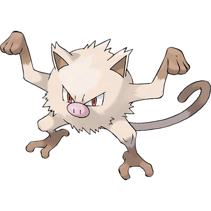

KANTO POKÉDEX
← 포켓몬 목록으로
#056

망키
격투
돼지원숭이 포켓몬
특성
의기양양
분노의경혈
오기 (숨겨진 특성)
울음소리
포획률 & 성비
포획률
190 / 255
성비
♂ 50%
50% ♀
생태
몸이 떨리며 콧김이 거칠어지면 화를 낼 조짐이지만 순식간에 격렬하게 화를 내기 때문에 도망갈 틈이 없다. 성원숭으로 진화한다.
← #055 골덕
#057 성원숭 →